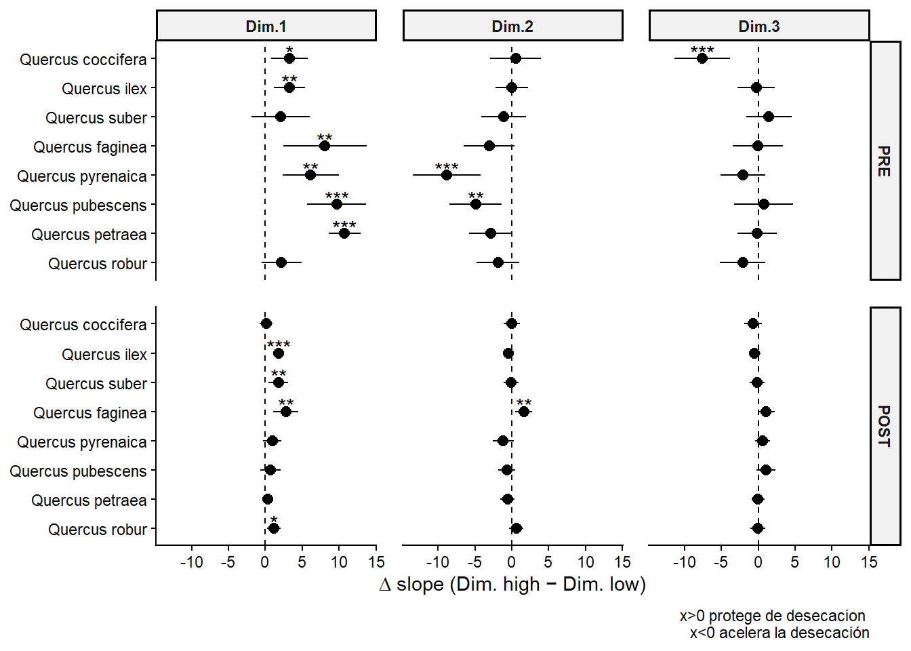

El efecto heterogéneo de los rasgos de las bellotas
Author
Eliot Mompeán
Published
August 9, 2026
Introducción
Me encontraba explorando la estructura de efectos aleatorios que queríamos introducir en los modelos mixtos que describen el efecto de los rasgos sobre la tasa de desecación. Empecé por el modelo más sencillo, que introduce un intercepto y pendiente aleatoria por bellota ((time|id_bellota)). El efecto de los rasgos era el esperado, el tamaño de la bellota proteje de la desecación, el pericarpo parece tener un sutil efecto protector, pero no significativo, y la cicatriz y probabildiad de rajado dan lugar a tasas de desecación más altas.
Sin embargo, el siguiente paso era introducir la especie y la procedencia en los efectos aleatorios, con el objetivo de que los patrones de desecación característicos de la especie se separaran de los efectos de los rasgos ((time||species/provenance)). Aquí vino la debacle. Sistemáticamente, la introducción de la especie o la procedencia modulando la pendiente en los efectos aleatorios daba lugar a una conclusión contraria según la interpretación del coeficiente Dim.2*time. Ahora, bellotas con pericarpos más robustos se secan más rápido.
¿Cómo era posible que la introducción de unos efectos aleatorios concretos cambie por completo nuestras conclusiones? ChatGPT propuso la siguiente idea: “si el efecto de los rasgos sobre la tasa de desecación es muy diferente en función de la especie, el efecto global observado puede cambiar sustancialmente al permtirle al modelo tener en cuenta la variación especie específica”. Y bueno, pues aquí estamos, para sacarle todo el jugo a esa idea.
Conjuro arcano
suppressPackageStartupMessages({library(tidyverse)library(glmmTMB)library(parameters)library(performance)library(emmeans)})df.bellotas <-read.csv("../00-data/desiccation_traits_long.csv")df.famd <-read.csv("../00-data/famd_ind_coord.csv")# Creat working dataframe ----df <- df.bellotas |> dplyr::select(-X) |> dplyr::select(id_bellota, codigo, tiempo_acumulado_horas, Moisture_content) |>left_join(y = df.famd, by ="id_bellota") |>drop_na(Dim.1, Dim.2, Dim.3) |>rename(time = tiempo_acumulado_horas) |>mutate(time_s =scale(time))# Create traits dataframe ----df.traits <- df |> dplyr::select(id_bellota, species, provenance, Dim.1, Dim.2, Dim.3) |>distinct()# Separate data in two datasetst94 <-as.vector((94-mean(df$time)) /sd(df$time))df.t1 <- df |>filter(time_s < t94)
Warning: Using one column matrices in `filter()` or `filter_out()` was deprecated in
dplyr 1.1.0.
ℹ Please use one dimensional logical vectors instead.
Conjuro arcano
df.t2 <- df |>filter(time_s > t94)
Warning: Using one column matrices in `filter()` or `filter_out()` was deprecated in
dplyr 1.1.0.
ℹ Please use one dimensional logical vectors instead.
Parameter | mm.pre.0 | mm.pre.1
------------------------------------------------------------------------
(Intercept) | 24.09*** [ 23.49, 24.68] | 23.87*** [ 21.54, 26.19]
time s | -18.59*** [-19.20, -17.98] | -18.73*** [-21.55, -15.90]
Dim 1 | 1.14*** [ 0.78, 1.49] | 1.13*** [ 0.74, 1.52]
Dim 2 | 0.47 * [ 0.01, 0.92] | -1.00*** [ -1.54, -0.47]
Dim 3 | -1.43*** [ -1.97, -0.89] | -0.68 * [ -1.21, -0.15]
time s × Dim 1 | 1.58*** [ 1.21, 1.94] | 1.79*** [ 1.42, 2.16]
time s × Dim 2 | 1.19*** [ 0.72, 1.66] | -0.81 ** [ -1.32, -0.31]
time s × Dim 3 | -2.06*** [ -2.62, -1.51] | -0.62 * [ -1.12, -0.12]
------------------------------------------------------------------------
Observations | 2066 | 2066
Conjuro arcano
# Parametros postcompare_parameters(mm.post.0, mm.post.1, ci =0.95,select ="{estimate}{stars} [{ci}]")
Parameter | mm.post.0 | mm.post.1
---------------------------------------------------------------------
(Intercept) | 29.67*** [29.24, 30.10] | 29.64*** [28.24, 31.04]
time s | -7.84*** [-8.02, -7.66] | -7.79*** [-8.59, -6.99]
Dim 1 | 0.62*** [ 0.37, 0.88] | 0.64*** [ 0.33, 0.94]
Dim 2 | -0.15 [-0.48, 0.18] | -0.51 * [-0.93, -0.10]
Dim 3 | -0.81*** [-1.20, -0.42] | -0.25 [-0.67, 0.18]
time s × Dim 1 | 0.29*** [ 0.18, 0.40] | 0.37*** [ 0.25, 0.49]
time s × Dim 2 | -0.05 [-0.19, 0.09] | -0.01 [-0.18, 0.15]
time s × Dim 3 | -0.32*** [-0.49, -0.16] | 6.63e-03 [-0.16, 0.17]
---------------------------------------------------------------------
Observations | 2231 | 2231
Objetivo
Describir el efecto de los tres ejes del FAMD sobre la tasa de desecación a nivel de especie.
Metodología
Descripción de la variación interespecífica de los ejes
Con la ayuda de gráficos boxplot y violín se describirá la variación global y entre especies de los ejes del FAMD. Además, se ajustarán modelos para describir qué parte de la media de las dimensiones se debe a la especie.
Conjuro arcano
lm.d1 <-lm(Dim.1~ species, data = df.traits)lm.d2 <-lm(Dim.2~ species, data = df.traits)lm.d3 <-lm(Dim.3~ species, data = df.traits)
Describir la estructura de correlación dentro de la especie
Aunque una característica fundamental de las dimensiones del FAMD es la ortogonalidad, esto no implica que dentro de los grupos las dimensiones puedan presentar correlación entre sí. Para ello se realizarán análisis de correlación entre las dimensiones a nivel global y dentro de la especie.
Análisis del efecto heterogeneo de las dimensiones del FAMD sobre la tasa de desecación
Con el objetivo de evaluar hasta que grado nos encontramos con un efecto heterogeneo de las dimensiones sobre la tasa de desecación se ajustarán modelos donde se permite que las dimensiones tengan una interacción con la especie en los efectos fijos.
Los modelos se compararán mediante performance::compare_performance(). Mediante un forest plot se analizará el cambio en el valor medio de los coeficientes y su IC95%. Además, se realizarán predicciones con los modelos para análizar el cambio en los resultados con un model u otro. Se utilizarán valores altos y bajos de la dimensión evaluada para analizar su efecto. Con el objetivo de no extrapolar el efecto fuera del rango observado de ninguna de las especies se definirá como valor alto el decil 90 y como valor bajo el decil 10 de los valores de la dimensión evaluada.
Posteriormente, mediante un modelo mixto se analizarán los efectos de las diferencias dentro y entre especies sobre la tasas de desecación. Con este análisis se pretende desgranar si el efecto global cambia sustancialmente a nivel de especie.
El análisis del gráfico boxplot no permite identificar sesgos importantes en ninguna de las tres dimensiones del FAMD. Existiendo tendencias en algunas especies a tener valores más altos en una dimensión u otra, el grado de solape es considerable. El único caso más extremo podría ser Q. petraea en la dimensión 3, donde su cuartil 25 es mayor que todos los cuartiles 75 del resto de bellotas, lo que indica una desviación apreciable en los valores típicos de dimensión 3 en esta especie. Aún con esto, este caso particular sigue presentando una cantidad considerable de datos solapados con el resto de especies.
El análisis de la proporción de la varianza de la media de las dimensiones del FAMD explicada por la especie indica que indica que entre el 45 y el 31% de la varianza de las dimensiones del FAMD está explicada por la especie. No se trata de una proporción mayoritaria, pero tal vez suficiente para incluir algún sesgo o cambio sustancia en la interpretación de los modelos.
Dimensión 1. Tamaño de la bellota.
Conjuro arcano
performance::r2(lm.d1)
# R2 for Linear Regression
R2: 0.368
adj. R2: 0.358
Dimensión 2. Robustez del pericarpo.
Conjuro arcano
performance::r2(lm.d2)
# R2 for Linear Regression
R2: 0.464
adj. R2: 0.455
Dimensión 3. Tamaño de la cicatriz y propensión al rajado.
Conjuro arcano
performance::r2(lm.d3)
# R2 for Linear Regression
R2: 0.325
adj. R2: 0.314
Estructura de correlación dentro de especie
El análisis de la correlación global entre las dimensiones del FAMD nos indica lo esperado: la ortogonalidad entre las dimensiones se expresa en coeficientes de correlación casi 0 (\(x < 10^{-16}\)).
Sin embargo, dentro de especie pueden encontrarse algunos coeficientes de correlación mayores. Q. pyrenaica destaca especialmente por un coeficiente de 0.79 para la correlación entre la dimensión 1 y la 2. En esta especie, las bellotas más grandes suelen ser más robustas. Las especies con un valor más alto de correlación entre los ejes después de Q. pyrenaica son Q. coccifera y Q. robur. Ambas presentan correlaciones negativas entre la dimensión 1 y la 2 de alrededor de -0.36.
La falta de independencia en los ejes podría afectar a la capacidad de identificar los coeficientes si decidiéramos incluir la especie como efecto fijo en los modelos.
Efecto heterogeneo sobre la tasa de desecación
Existe evidencia de que la relación entre los rasgos de las bellotas y la tasa de desecación no es completamente homogénea entre especies ni entre fases de desecación.
Fase previa. La incorporación de heterogeneidad interespecífica en los efectos de los rasgos mejoró sustancialmente el ajuste respecto al modelo que asumía efectos comunes. Entre los modelos que permitían heterogeneidad en un único eje, el mayor apoyo correspondió al modelo que permitía variar entre especies el efecto de Dim1 (AIC = 5734.0; peso de AIC = 0.926), seguido del modelo con heterogeneidad en Dim2 (AIC = 5741.2; peso = 0.025). El modelo con heterogeneidad en Dim3 recibió escaso apoyo (AIC = 5761.6).
Fase posterior. En la fase posterior, el patrón cambió: el mayor apoyo correspondió al modelo que permitía heterogeneidad interespecífica en el efecto de Dim2 (AIC = 7747.3; peso = 0.860), mientras que el modelo con heterogeneidad en Dim1 recibió apoyo secundario (AIC = 7751.0; peso = 0.140). El modelo con heterogeneidad en Dim3 recibió escaso apoyo (AIC = 7764.8).
Los resultados del análisis del cambio en el efecto de los rasgos por especie indica que existen marcadas diferencias. Los efectos tienden a ser más marcados y heterogéneos en la fase previa, mientras que en la fase posterior son más débiles y consistentes. Los efectos de los rasgos sobre la tasa de desecación difieren marcadamente entre la fase previa y la fase posterior. Durante la fase previa, el tamaño de la bellota (Dim.1) presenta un efecto protector predominante (x>0) en la mayoría de las especies (6 de 8), mientras que en la fase posterior este efecto se encuentra marcadamente reducido. La robustez del pericarpo (Dim.2) tiene un efecto predominantemente acelerador de la desecación (x<0) en la fase previa, alcanzando grados de significancia (\(p<0.05\)) en Q. pubescens y Q. pyrenaica. Sin embargo, estos efectos desaparecen mayoritariamente en la fase posterior, excepto para Q. faginea donde presenta efectos protectores de la desecación. Finalmente, el tamaño de la cicatriz y propensión al rajado apenas presenta efectos apreciables en la fase previa o posterior. El único caso significativo fue Q. coccifera, donde presentó un efecto acelerador de la desecación.
Conjuro arcano
p

Entre los efectos encontrados, el único que resulta difícil de explicar según nuestras hipótesis a priori es el de la robustez del pericarpo en algunas especies de Quercus. Concretamente, hemos descrito que en especies como Q. pyrenaica y Q. pubescens pericarpos más robustos dan lugar a tasas de desecación más altas. Se pensó en la correlación entre ejes como una posible explicación. Si en Q. pyrenaica la correlación entre el eje 1 y el 2 fuera elevada y negativa podría argumentarse que el modelo está asociando el efecto de tener bellotas pequeñas a la robustez del pericarpo. Sin embargo, el coeficiente de correlación era positivo en ese caso, por lo que en Q. pyrenaica las bellotas con pericarpos robustos se asocian con bellotas grandes.
Otro elemento explicativo puede estar asociado a la presencia de este efecto acelerador solo en la fase previa. Durante el experimento de desecación es conocido por el grupo que algunas bellotas acumulaban agua entre el pericarpo y los cotiledones. Es posible que pericarpos más robustos estén asociados a mayor acumulación inicial de agua en esta especie. Esto podría observarse graficando el contenido hídrico inicial en función de la dimensión 2. Sin embargo, como puede observarse a continuación, la relación entre estos dos parámetros es heterogénea entre especies y, en el caso particular de Q. pyrenaica negativa.
A estas alturas de la tesis empiezo a renunciar a entender algunos de los patrones encontrados en estos datos. Además, sospecho que perderse en estas cosas es intentar explicar ruído, más teniendo en cuenta que estoy intentando explicar unos patrones que, al producirse solo en las primeras 50-90 horas del experimento, probablemente solo expliquen una parte limitada, tal vez despreciable, del destino biológico de nuestras bellotas. Por ejemplo, ¿qué importaría que el pericarpo acelere la tasa de desecación en las primeras 50 horas si eso supusiera que la bellota llega a contenidos hídricos críticos prácticamente a la vez que si no hubieras tenido un cuenta el patrón inicial?
Diferencias dentro y entre especies
En conjunto, los modelos within–between muestran que los tres ejes del PCA presentan patrones diferenciados en su relación con la desecación y que estos patrones cambian entre las fases PRE y POST. Dim.1 presenta un efecto relativamente consistente, Dim.2 evidencia una marcada divergencia entre los componentes between y within, y Dim.3 parece estar principalmente asociado con diferencias entre especies, especialmente durante la fase posterior
Dim.1 muestra el efecto más consistente: valores elevados, asociados a bellotas de mayor tamaño, se relacionan con una menor tasa de desecación tanto por diferencias entre especies como, especialmente durante PRE, por diferencias entre bellotas dentro de las especies. Dim.2 presenta el patrón más llamativo: durante PRE, el efecto entre especies es protector, mientras que el efecto dentro de especie es contrario, de modo que las especies con valores medios más altos de Dim.2 tienden a desecarse más lentamente, pero dentro de cada especie las bellotas con valores relativamente altos de Dim.2 muestran una mayor tasa de desecación. Durante POST, este efecto entre especies desaparece, mientras que el efecto within se mantiene. Finalmente, Dim.3 se asocia con una mayor tasa de desecación durante PRE tanto entre especies como dentro de ellas, aunque el efecto entre especies es considerablemente mayor; durante POST, la asociación entre especies persiste, mientras que el efecto within deja de estar claramente respaldado.
Conjuro arcano
compare_parameters(m.wb.t1, m.wb.t2, ci =0.95,select ="{estimate}{stars} [{ci}]")
Parameter | m.wb.t1 | m.wb.t2
--------------------------------------------------------------------------
(Intercept) | 24.12*** [ 23.55, 24.69] | 29.67*** [29.24, 30.09]
time s | -18.49*** [-19.03, -17.94] | -7.86*** [-8.03, -7.69]
D1 between | 1.71*** [ 1.12, 2.31] | 0.88*** [ 0.44, 1.32]
D1 within | 1.11*** [ 0.68, 1.54] | 0.56*** [ 0.24, 0.89]
D2 between | 1.92*** [ 1.24, 2.60] | 0.35 [-0.18, 0.87]
D2 within | -0.70 * [ -1.31, -0.09] | -0.63 ** [-1.09, -0.17]
D3 between | -1.51 ** [ -2.50, -0.52] | -1.26*** [-1.95, -0.58]
D3 within | -0.98 ** [ -1.61, -0.35] | -0.40 [-0.87, 0.08]
time s × D1 between | 1.82*** [ 1.25, 2.39] | 0.20 * [ 0.02, 0.37]
time s × D1 within | 1.69*** [ 1.27, 2.10] | 0.31*** [ 0.18, 0.44]
time s × D2 between | 2.82*** [ 2.17, 3.47] | -0.09 [-0.30, 0.12]
time s × D2 within | -0.60 * [ -1.18, -0.02] | -0.23 * [-0.42, -0.05]
time s × D3 between | -4.12*** [ -5.07, -3.17] | -1.12*** [-1.39, -0.84]
time s × D3 within | -0.66 * [ -1.26, -0.06] | 0.09 [-0.10, 0.28]
--------------------------------------------------------------------------
Observations | 2066 | 2231
Conclusiones
El análisis evidencia que el efecto de los rasgos de las bellotas sobre la tasa de desecación es heterogéneo entre especies y, además, cambia entre las fases de desecación (PRE y POST). La especie explica entre el 31 y el 45% de la varianza de las dimensiones del FAMD y, aunque globalmente estas dimensiones son ortogonales, dentro de algunas especies (destacando Q. pyrenaica) aparecen correlaciones entre ejes que pueden sesgar la interpretación de los coeficientes. Los modelos que permiten que el efecto de los rasgos varíe entre especies mejoran sustancialmente el ajuste, con un apoyo máximo para la heterogeneidad en el tamaño de la bellota (Dim.1) durante la fase previa y en la robustez del pericarpo (Dim.2) durante la fase posterior. El tamaño de la bellota ejerce un efecto protector en la mayoría de las especies durante la fase previa, efecto que se desvanece en la fase posterior. La robustez del pericarpo presenta un efecto dual: protector entre especies pero acelerador dentro de especie, significativo en Q. pubescens y Q. pyrenaica durante la fase previa. Por último, el tamaño de la cicatriz y la predisposición al rajado (Dim.3) aceleran la desecación principalmente a través de diferencias entre especies, aunque su efecto recibe escaso apoyo a nivel de interacción especie×tiempo y solo es significativo en Q. coccifera.
Eje
Interpretación
Fase
Efecto sobre la tasa de desecación
Heterogeneidad entre especies
Within vs between
Dim.1
Tamaño de la bellota
PRE
Protector (↓ tasa) en 6/8 especies
Alta en apoyo del modelo (peso AIC = 0.926), con dirección consistente entre especies
Within y between protectores
Dim.1
Tamaño de la bellota
POST
Marcadamente reducido
Moderada; apoyo secundario (peso AIC = 0.140)
Efectos debilitados
Dim.2
Robustez del pericarpo
PRE
Contrario según el nivel de análisis: protector entre especies, acelerador dentro de especie (significativo en Q. pubescens y Q. pyrenaica)
Moderada; apoyo secundario (peso AIC = 0.025)
Between protector, within perjudicial
Dim.2
Robustez del pericarpo
POST
Acelerador dentro de especie; entre especies ≈ 0
Alta; mayor apoyo del modelo (peso AIC = 0.860)
Between ≈ 0, within perjudicial
Dim.3
Tamaño relativo de la cicatriz / predisposición a rajas
PRE
Acelerador (↑ tasa); solo Q. coccifera significativo
Baja; escaso apoyo del modelo (AIC = 5761.6)
Between y within perjudiciales, con efecto between mucho mayor
Dim.3
Tamaño relativo de la cicatriz / predisposición a rajas